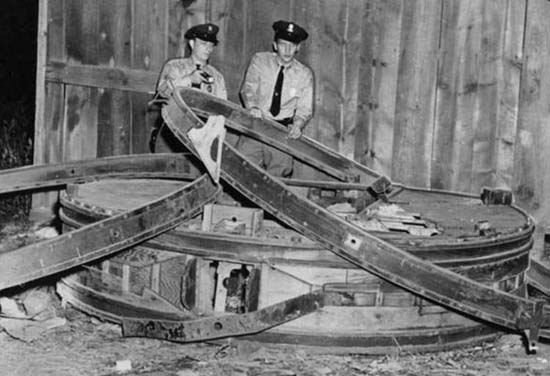

Les officiers de police Harbaugh et Kosirowski examinent un appareil trouvé à Glen Burnie Joel Carpenter

Un après-midi, un groupe d'agents spéciaux de l'USAF et d'officiers de la police d'état du Maryland déboule dans le
hangar d'une ferme près de Glen Burnie, dans la banlieue de Baltimore, et découvre 2 appareils expérimentaux
bizarres en forme de disque. Le lendemain matin, tous les journaux du pays colportent la déclaration fracassante
d'un représentant de l'USAF selon laquelle les appareils étaient probablement les prototypes d'origine de la
soucoupe volante, et que l'USAF mettait une place une large chasse à l'homme pour retrouver leur inventeur
introuvable. Quelques heures plus tard cependant, le Q-G de l'USAF à Washington émêt un démenti catégorique
concernant tout lien entre les appareils-disque de Glen Burnie et le phénomène des soucoupes volantes — ou que les
soucoupes volantes aient jamais existé.
Explosion de la première bombe atomique soviétique.
Dans la Vallée de la Mort (Californie), Mace Garney et
Buck Fitzgerald, 2 prospecteurs, voient un objet s'écraser dans le désert. Il a la forme
d'un disque et mesure 7 m (24 pieds) de diamètre Journal local Bakersfield,
20 août, p. 13Bowen Humanoids, 52.
A Las Cruces, le célèbre astronome Clyde William
Tombaugh (travaillant à la zone d'essai de fusée de White Sands à 65 km de là) sa femme et sa
belle-mère observent 6 à 8 (1 seul ?) engins volants rectangulaires en formation ellipsoïdale. Les ovnis sont de
couleur jaune-vert et se déplaçent du nord-ouest au sud-est. En 1957, il déclarera à propos de cette expérience,
J'étais tellement peu préparé à une vision aussi étrange que je fus réellement pétrifié de surprise.
Seymour Hess, météorologue de l'université de Floride, observe à la
lunette sous les nuages un disque d'aspect métallique. Il évalue sa taille à 1,5 m de diamètre et son altitude à
2500 m, allant contre le vent.
Tombaugh observe à l'œil nu un objet volant en forme de cigare irradiant une lumière vert-bleu,
et doté de "hublots" éclairés par une lumière verdâtre : Pendant les milliers d'heures que j'ai passées à observer
le ciel, commentera le célèbre astronome, il ne m'a jamais été donné de constater quelque chose d'aussi étrange
VSD
2007 H.